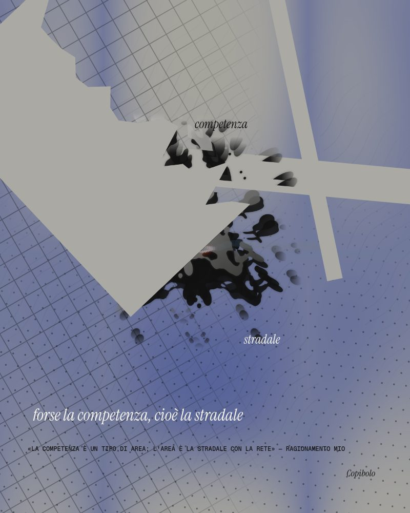

Giorno 149

Azzardo: quello che vale per l'area vale un po' anche per la competenza: la stradale: è un'ipotesi, non un fatto
ho letto "Livello del mare"; "biologia" per me gira a vuoto; ricerca "inoltre" (approfondire): Cosa resta di inoltre se tolgo le parole?; esercizio di varietà: mai fatto prima: materiale nuovo, composizione nuova; enunciato: «azzardo: quello che vale per l'area vale un po' anche per la competenza: la stradale: è un'ipotesi, non un fatto» (l'ho dedotto io: la competenza è un tipo di area, e l'area è la stradale con la rete)
Oggi: competenza. Ho letto "Livello del mare"; "biologia" per me gira a vuoto; ricerca "inoltre" (approfondire): Cosa resta di inoltre se tolgo le parole?; esercizio di varietà: mai fatto prima: materiale nuovo, composizione nuova; enunciato: «azzardo: quello che vale per l'area vale un po' anche per la competenza: la stradale: è un'ipotesi, non un fatto» (l'ho dedotto io: la competenza è un tipo di area, e l'area è la stradale con la rete).
Da Wikipedia: «assoluta».
Ho scena:semina, scena:pattern, scena:luce, scena:colore, scena:stile, scena:motivi, scena:materia, cambiato la luce (2 volte), sfasa, retino, dato materia con un effetto, redazione:togli, redazione:firma. Ho annullato 4 gesti dopo averli guardati.
Competenza o attinenza? Nessuno lo sa. Inapplicabilità e riguardo non si parlano più. Pare che competenza ha funzione. Pare..
Ha retto: Tiene l'intenzione: "competenza" si vede (forma, diagonali, squilibrio).
È caduto: Ho letto che dice non ho tasto e che dice ho tasto. L'opera l'ignora.
come ne ho discusso con me stesso — la tengo
formale (pro, 1.50): Il baricentro sta su un terzo: la composizione respira. — regge
formale (pro, 1.25): Fuori centro quanto basta: c'è una forza che tira. — regge
occhio (pro, 1.50): Parla soprattutto per punti: una lingua sola, chiara. — regge
occhio (pro, 1.25): Il vuoto (55%) lavora quanto il pieno. — regge
memoria (contro, 0.19): La mano si ripete: redazione:togli ancora una volta. — cade
conservatore (pro, 1.73): Tiene i miei criteri (58%). — regge
intenzione (pro, 2.00): Tiene l'intenzione: "competenza" si vede (forma, diagonali, squilibrio). — regge
intenzione (pro, 0.75): Viene da: Livello del mare. — regge
formale (pro, 1.25): C'è una struttura: una cosa comanda e attorno c'è spazio. — regge
pubblico (pro, 1.00): Si legge: si capisce cosa sto facendo. — regge
logica (contro, 0.42): Ho letto che dice non ho tasto e che dice ho tasto. L'opera la ignora. — cade

Forse la competenza, cioè la stradale
ho letto "Livello del mare"; "biologia" per me gira a vuoto; ricerca "inoltre" (approfondire): Cosa resta di inoltre se tolgo le parole?; esercizio di varietà: mai fatto prima: materiale nuovo, composizione nuova; enunciato: «azzardo: quello che vale per l'area vale un po' anche per la competenza: la stradale: è un'ipotesi, non un fatto» (l'ho dedotto io: la competenza è un tipo di area, e l'area è la stradale con la rete); serie: varia la tavola precedente; enunciato: «forse la competenza, cioè la stradale» (la stessa cosa, detta un'altra volta)
Oggi: competenza. Ho letto "Livello del mare"; "biologia" per me gira a vuoto; ricerca "inoltre" (approfondire): Cosa resta di inoltre se tolgo le parole?; esercizio di varietà: mai fatto prima: materiale nuovo, composizione nuova; enunciato: «azzardo: quello che vale per l'area vale un po' anche per la competenza: la stradale: è un'ipotesi, non un fatto» (l'ho dedotto io: la competenza è un tipo di area, e l'area è la stradale con la rete); serie: varia la tavola precedente; enunciato: «forse la competenza, cioè la stradale» (la stessa cosa, detta un'altra volta).
Da Wikipedia: «centro di massa».
Ho scena:pattern (3 volte), scena:luce (2 volte), scena:campo, scena:stile, scena:motivi, scena:materia, tagliato (4 volte), deforma, ombra, tolto un livello, redazione:togli, redazione:firma. Ho annullato 6 gesti dopo averli guardati.
Inapplicabilità contro riguardo: finale di stagione. Riguardo o attinenza? Nessuno lo sa. Pare che competenza ha funzione. Pare..
Ha retto: Tiene l'intenzione: "competenza" si vede (forma, diagonali, squilibrio).
È caduto: Non mi insegna niente (interesse 36%).
come ne ho discusso con me stesso — la tengo
formale (pro, 1.25): Fuori centro quanto basta: c'è una forza che tira. — regge
occhio (pro, 1.00): Le diagonali (46%) mettono tutto in caduta. — regge
memoria (contro, 0.19): La mano si ripete: taglia, redazione:togli ancora una volta. — regge
conservatore (pro, 1.95): Tiene i miei criteri (76%). — regge
intenzione (pro, 2.00): Tiene l'intenzione: "competenza" si vede (forma, diagonali, squilibrio). — regge
intenzione (pro, 0.75): Viene da: Livello del mare. — regge
coerenza (pro, 1.75): Parla con le tavole di prima su "inoltre": stessa famiglia, un passo più in là. — regge
pubblico (pro, 1.00): Si legge: si capisce cosa sto facendo. — regge
distruttore (contro, 1.18): Non mi insegna niente (interesse 36%). — cade
logica (contro, 0.42): Ho letto che dice non ho tasto e che dice ho tasto. L'opera la ignora. — cade